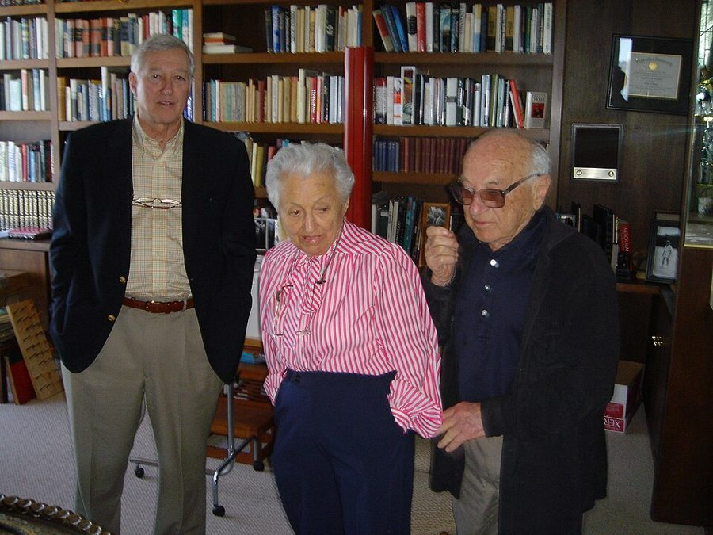

Free to Choose · 导读
Free to Choose: A Personal Statement — Milton and Rose Friedman, 1980（张琦译《自由选择》，机械工业出版社）
这本书是 1980 年美国公共电视台同名十集节目的书本版，一章对应一集，拿市场和政府的边界去过一遍贸易、货币、福利、教育、监管。这里不替你读书：每章一页，先给论证骨架和分节地图，补上 1970 年代美国的背景和经济学概念，读英文时有词条，读完看反对的人怎么说、四十多年后事实怎样。

英文、有声书、译本，怎么配合
每章页面顶上有一个开关：这一章我读英文，还是读译本。读英文时，词条展开，分节地图先给原书的小标题；读译本时，词条收起，分节地图先给译本的小节名。两种可以一章一章换着来，各章分开记。
三个版本的位置都标好了。每一节下面写着纸书（Harvest 版）的页码、在这一章录音里大约第几分钟开始、译本里对应的小节名。词条里斜体的那几个词是原句里连续的原文，在 Kindle 里搜它就能找到。
每章一页，读之前看上半页，读完看下半页。中间有一道「先停下，去读原书」：上面是下注、骨架、地图、背景、概念和词条，下面是对照你的赌注、反方观点、对照今天和理解检查。
建议先读开读之前（序言和引言，约 4400 词），再读第 1 章：它给出全书反复用的两样工具。后面九章各讲一个领域，可以按兴趣挑着读。
目录
全书回顾和术语
每章最后有一节「精彩回顾」，读过又忘了，打开全书回顾，各章的都在一页上。全书反复出现的概念收在全书术语，每条有英文、译本的译法和解释。
我的词本
下面是这本书里记下的。几本伴读的词条汇总在一起、按间隔复习：打开跨书词本 →